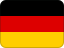

Germany
History
Otto I was crowned emperor, a key marker for the Holy Roman Empire.
The German Empire was proclaimed after national unification.
West Germany and East Germany were founded after World War II.
Germany reunified, restoring a single German state after Cold War division.
Germany became part of the European Union through the Maastricht Treaty.
 Part ofEuropeMore countries, cities and routes.
Part ofEuropeMore countries, cities and routes.Short facts
RegionCentral Europe
LanguageGerman
Time zoneCET (UTC+1)
Drives onRight
Worth seeing
- Neuschwanstein Castle: The fairytale Bavarian castle that inspired Disney's Sleeping Beauty.
- Berlin: Reunified capital with world-class museums, a vibrant arts scene and rich history.
- Oktoberfest: The world's largest beer festival draws 6 million visitors to Munich each year.
Find a city in Germany
Showing all cities
 Berlin
Berlin Munich
MunichPlanning questions
What is Germany known for?Neuschwanstein Castle, Berlin, Oktoberfest.
What is the capital?Berlin.
Which language is useful?German.
When is the national day?3 October.
How should I browse it here?Start with the facts, jump to linked cities, then check events and topics.
Upcoming events
Showing all 15 events
 Jazzfest Berlin29 October 2026 – 1 November 2026 — Berlin — Germany
Jazzfest Berlin29 October 2026 – 1 November 2026 — Berlin — Germany Cologne Carnival4 February 2027 – 10 February 2027 — Cologne — Germany
Cologne Carnival4 February 2027 – 10 February 2027 — Cologne — Germany Berlin International Film Festival10 February 2027 – 21 February 2027 — Berlin — Germany
Berlin International Film Festival10 February 2027 – 21 February 2027 — Berlin — Germany IIHF World Championship14–30 May 2027 — Düsseldorf — Germany
IIHF World Championship14–30 May 2027 — Düsseldorf — Germany UEFA Europa League Final26 May 2027 — Frankfurt — Germany
UEFA Europa League Final26 May 2027 — Frankfurt — Germany Rock am Ring4 June 2027 – 6 June 2027 — Nurburgring — Germany
Rock am Ring4 June 2027 – 6 June 2027 — Nurburgring — Germany Rock im Park4 June 2027 – 6 June 2027 — Nuremberg — Germany
Rock im Park4 June 2027 – 6 June 2027 — Nuremberg — Germany Airbeat One7 July 2027 – 11 July 2027 — Neustadt-Glewe — Germany
Airbeat One7 July 2027 – 11 July 2027 — Neustadt-Glewe — Germany German MotoGP11 July 2027 — Hohenstein-Ernstthal — Germany
German MotoGP11 July 2027 — Hohenstein-Ernstthal — Germany Parookaville16 July 2027 – 18 July 2027 — Weeze — Germany
Parookaville16 July 2027 – 18 July 2027 — Weeze — Germany World University Games16 July 2027 — Rhine-Ruhr — Germany
World University Games16 July 2027 — Rhine-Ruhr — Germany Lollapalooza Berlin17 July 2027 – 18 July 2027 — Berlin — Germany
Lollapalooza Berlin17 July 2027 – 18 July 2027 — Berlin — Germany Wacken Open Air28–31 July 2027 — Wacken — Germany
Wacken Open Air28–31 July 2027 — Wacken — Germany European Championships11 August 2027 — Munich — Germany
European Championships11 August 2027 — Munich — Germany Summer Breeze Open Air18–21 August 2027 — Dinkelsbühl — Germany
Summer Breeze Open Air18–21 August 2027 — Dinkelsbühl — GermanyUse Berlin as the first planning anchor for Germany, then compare the city, food and worth-seeing notes on this page.
Food & drink
 Bratwurst
Bratwurst Beer
BeerKnown for
Neuschwanstein CastleBerlinReunified capitalworld-class museumsa vibrant arts scenerich history.Oktoberfest
 Music & Culture
Music & Culture